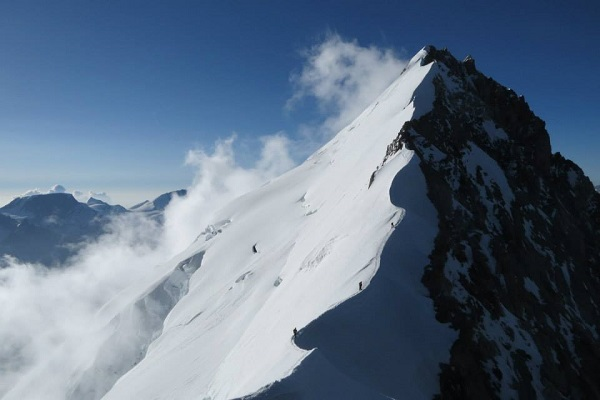

Alpine Style

×
Mont Blanc, Matterhorn, Eiger - te góry zna każdy alpinista. Jednak w Alpach jest wiele wspaniałych szczytów mniej znanych i mniej zatłoczonych niż te góry-symbole. Projekt „In Alpine Style" jest kierowany do osób, które chcą poznać czterotysięczniki alpejskie z innej strony, delektować się ich pięknem w ciszy i spokoju, a zdobycie trzech z nich zakończyć kąpielą na Lazurowym Wybrzeżu. Nasz plan zakłada najpierw działalność w Szwajcarii, gdzie „na rozgrzewkę" wejdziemy na Weissmies. Szczyt ten wznosi sie nad dolina Saas, która będzie naszą bazą wypadową w pierwdzej fazie wyprawy. Wejście na te górę będzie też dobrą aklimatyzacją przed atakiem na, kondycyjnie wymagający, Dom. Oba szczyty mają śnieżny charakter, w związku z tym dużym zagrożeniem są szczeliny ukryte na ich zboczach, oraz seraki, których szczególnie na Weissmies, nie brakuje. Dlatego dla zachowania bezpieczeństwa, używanie całego sprzętu alpinistycznego jest niezbędne. Następnie przeniesiemy się do Francji, w Alpy Delfinatu, gdzie celem naszej alpejskiej przygody będzie zdobycie samotnej góry Barre des Ecrins, najdalej wysuniętego na południe czterotysięcznika alpejskiego. Tu również sprzwdzimy swoje umiejętnosci poruszania się w skale, poneważ grań kopuły szczytowej ma raczej skalny charakter. Jeżeli pogoda nam dopisze, akcja górska na każdym ze szczytów powinna nam zajać po dwa dni. Po trudach wspinaczki udamy się na Lazurowe Wybrzeże, gdzie nabierzemy sił przed powrotem do kraju.
Weissmies - 4023 m n.p.m.
Najwyższa i najpiękniejsza góra na wschód od Saastal. Stanowi kulminacyjny punkt łańcucha gnejsowych szczytów ciągnących się na linii północ-południe od Fletschhorn przez Lagginhorn po Portjengrat. Długie, pochyłe granie nadają szczytowi regularny kształt piramidy. Dostępu do masywu bronią trzy lodowce: Trift na zachodzie, Rottal na południu i Wassmies na wschodzie. Widok ze szczytu jest imponujący, w pogodny dzień podobno i wieżę katedry w Mediolanie można zobaczyć. Pierwszego wejścia dokonano od strony Almageller w 1855 r. Autorem wejścia był prawnik, Peter Joseph Zurbriggen z Valais i Jakob Christian H_usser z Zurychu. Po kolejnych 22 latach pokonano kruchą wschodnią ścianę, na szczycie stanęli E.P. Jackson i J.A. Peebles z przewodnikami. W 1884 roku pokonano południową ścianę - Claude i Hubert Wilsonowie z przewodnikami. W tym samym roku pokonano północną grań, z trudnymi partiami skalnymi, a były to czasy kiedy nie znano jeszcze haków! Jednym z ostatnich wielkich osiągnięć jest przejście diretissimy północno-zachodniej ściany (J. Straub i H. Rotwangl) w 1986 roku. Droga normalna wiedzie z lodowca Trift przez dosyć skomplikowany lodospad na południowo - zachodnią grań, zwaną Triftgrat. Przy dobrej kondycji śniegu można skierować się nieco w lewo i przekroczyć szczelinę brzeżną, aby dalej wznosić się zboczami zachodniej, 600 m ściany, o nachyleniu 45-50 stopni. Albo łatwym terenem w górę, na grań, którą osiągamy na lewo od wierzchołka 3816 m i dalej już granią Trift. Na lodowiec dostaniemy się kolejką z Saas Grund i do akcji przystąpimy po biwaku przy Hohsaas. Inne drogi: północna grań, AD, III-II (IV - jeden wyciąg), 5 h, 530 m w pionie z Lagginjoch, mikst, nawisy. Na agginjoch 1 h z Hohaas i 2 h ze schroniska Weissmies. południowa ściana D, IV, III, 5 h, 500 m w pionie od podstawy ściany, mikst, pod koniec pionowy lód. Południowo-wschodnia grań, F, I+, do 40 stopni, 4 h ze schroniska Alamageller, 1170 m w pionie, na początku śnieg, potem mikst.
Dom - 4505 m n.p.m.
Jest najwyższym szczytem w łańcuchu Mischabel i najwyższym szczytem leżącym w całości w Szwajcarii. Widziany z północy wygląda niczym niebiańska świątynia śniegu. Jego nazwa pochodzi od kanonika Berchtolda z katedry w Sitten, który jako pierwszy dokonał pomiarów tego rejonu. Góra otoczona jest przez lodowce: Festi, Kin i Fee. Wejście na ten wysoki czterotysięcznik nie jest trudne, pierwsze wejście miało miejsce 11 września 1858 roku, granią Festi (John Llewellyn-Davies, Johann Zumtaugwaldem, Johann Kr_nig, Hieronymus Brantschen). Góra jest dostępna też dla ski alpinistów, pierwsze wejście na nartach A. Lunn, J. Knubel, 1917 rok. Droga normalna prowadzi północną flanką, aż 1600 m w pionie, PD, II - jeden odcinek poniżej przełęczy Festi, (alternatywą może być Festigrat, 3 h, 820 m w pionie z przełęczy Festi, lód i mikst). Droga jest nieco mozolna, ze schroniska Dom do krawędzi moren bocznych na północy lodowca Festi, wymaga to pokonania kilku szczelin, przejścia pod lodową ścianką. Dalej w górę urwiska ponad północną krawędzią lodowca, aby osiągnąć strategiczną przełęcz Festi. Tu droga normalna schodzi na lodowiec Hohberg i nim stromo w górę do szczytu. Inne drogi: Północonoo-wschodnia grań, TD-, III-II, (odcinki IV+), 4 h, 420 m w pionie z przełęczy Lentz i na nią kolejne 4 h ze schroniska Dom. Południowa grań, PD, AD+, odcinki III, 3h, 270 m w pionie z przełęczy Dom. Zachodnia grań, D, III-II, (odcinki IV), 1600 m w pionie od podstawy ściany, rzadko powtarzana, głównie wspinanie mikstowe. Wschodnia ściana, D, III, 6 h, 1000 m w pionie od podstawy ściany, trudne wspinanie mikstowe
Barre des Ecrins - 4101 m n.p.m.
Około 50 km na południowy - zachód od Grenobl, w Alpach Delfinatu znajduje się Park Narodowy Ecrins. To właśnie tu leży trzeci nasz cel, najdalej wysunięty na południe samotny czterotysięcznik. Góra została zdobyta w 1864 roku przez silny zespół Edwarda Whympera i Adolphusa Warburtona Moore’a oraz przewodników Michaela Croza i Christiana Almera. Weszli oni północno-wschodnią granią a zeszli od strony zachodniej. Droga tą osiąga się najpierw główny wierzchołek, za którym ciągną się postrzępione, granitowe skały tworzące Pic Lory (4086 m), główny z bocznych szczytów. Pozostałe boczne szczyty to Breche Lory (3974 m) i Dome de Neige (4015 m). Ze szczytu rozciąga się piękny widok na Alpy Cottian, Monte Viso i daleki Mont Blanc. W 1870 roku pokonano północną ścianę w linii spadku wierzchołka William Augustus Brevoort Coolidge, Christian i Urlych Almerowie oraz Christian Gertsch. Droga normalna: północna ściana, zachodnia grań, PD+, II-I, do 40 stopni, 6 h, ze schroniska Ecrins, 1000 m w pionie, dojście lodowcem Blanc pod zachodnią grań, przekroczenie szczeliny brzeżnej czasem nastręcza spore trudności, następnie wspinaczka mikstowa, w odwrocie konieczność zjazdu. Inne drogi: Grań północno-wschodnia, AD, III-II, do 50 stopni, 2 h, 440 m w pionie z Breche des Ecrins, wspinaczka mikstowa. Południowy filar, TD, (odcinki V+, V) i IV-III, 9 h, 1100 m, klasyczna wspinaczka skalna. Pierwsze przejście Jeanne i Jean Franco, 15.08.1944 r.
| Data rozpoczęcia | 15.07, 20.08 |
|---|---|
| Czas trwania | 14 dni |
| Koszt indywidualny | 4000 pln |
| Koszt obejmuje | ubezpieczenie alpinistyczne, noclegi, opiekę instruktora |
| Koszt nie obejmuje | dojazdu, kolejki górskiej, wyżywienia |
| Lokalizacja | Alpy |